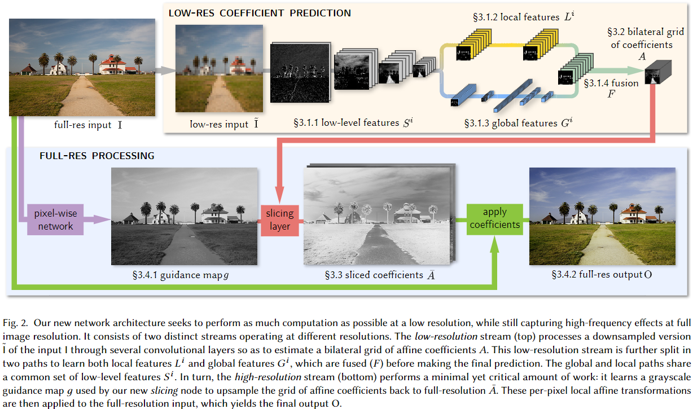

最近在看风格转换的时候看了一篇文章叫《Joint Bilateral Learning for Real-time UniversalPhotorealistic Style Transfer》，然后顺着这方面的研究往上捋，发现了这篇文章，这里进行一些记录。
提出的问题
在移动端的图像处理任务上，对于高分辨率图像，一些操作可能耗时很久。
解决思路
对于一个高分辨率图像，首先下采样得到低分辨率图像，在低分辨率图像上训练一个CNN，让其预测双边空间（bilateral space）下的局部仿射变换的系数，然后通过slice操作将这个预测出的局部仿射变换系数插值到高分辨率下，最后通过这个仿射变换对高分辨率图像进行处理，得到处理之后的高分辨率图像。
具体实现
模型的整体结构如下图所示，其中对于一个高分辨率输入图\(I\)，首先下采样得到低分辨率图像\(\tilde{I}\)，用一个CNN模型（VGG-19）在这个低分辨率图像上提取特征（在共享的vgg结构结束之后，有两个分支，分别提取局部特征\(L^i\)和全局特征\(G^i\)），之后将局部特征和全局特征混合，输出双边网格方式的图像变换系数矩阵\(A\)，另一边，高分辨率图像也要做一个简单的pointwise卷积和激活层，转换成高分辨率的引导图像\(g\)，然后根据\(g\)对\(A\)进行插值，得到高分辨率的变换系数矩阵\(\bar{A}\)，将这个变换系数矩阵应用在原图上，即可完成对原图的处理操作，得到输出图像\(O\)。

实验结果
这个模型可以专门训练用于模拟复杂的一些图像操作，例如HDR+、Local Laplacian filter、Face brightening等，在移动设备上，可以节约这些操作的时间，作者的实验中显示，在同样的设备上，传统算法对一张\(1920\times 1080\)的图像进行Local Laplacian filter，大概需要200ms的时间，而这个模型只需要20ms左右。
存在的问题
由于这个模型预测的变换系数是针对每个像素的，例如输入图片是三通道，那么每个像素的变换系数是一个\(3\times 4\)的矩阵（包含一个bias），这样也就限制这个模型只能输出单像素输出只依赖于单像素输入的变换系数。另外对于去雾等操作，这个模型的效果也不是很好，因为pointwise卷积得到的guide图像在去雾方面不能做一个很好的上采样引导。